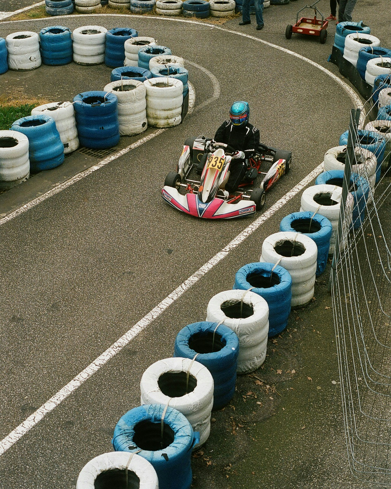

Cum a început totul

Pasiunea mea pentru mașinile de tip formula 1 a început din copilăria mea cand parinții mei mi-au cumpărat un cart electric. Acea senzație de viteză și control, chiar și la o scară atât de mică, m-a făcut să devin un pasionat de formula 1.
Despre Formula 1
Formula 1 este vârful motorsportului mondial.
- Aerodinamică: Mașinile sunt proiectate să genereze forță de apăsare, permițându-le să circule cu viteze uriașe în viraje.
- Tehnologie Hibridă: Motoarele actuale sunt unități de putere V6 de 1.6 litri, care recuperează energia prin sisteme electrice avansate.
- Efort Fizic: Piloții suportă forțe de până la 5G în timpul frânărilor și virajelor, ceea ce necesită o condiție fizică extremă.
Împărtășește experiența ta
Tu ce amintiri ai legate de Formula 1? Scrie-le mai jos:
⬅ Înapoi la blogul principal